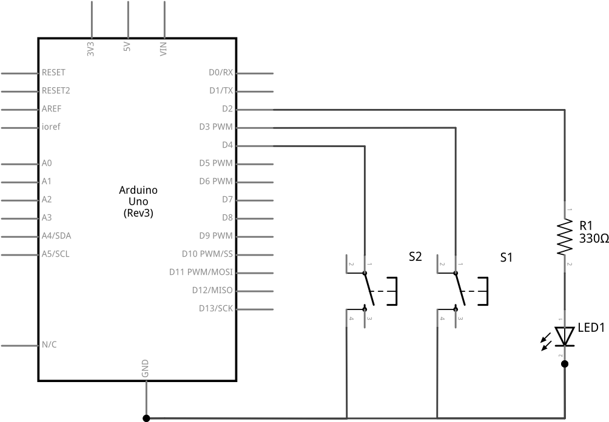
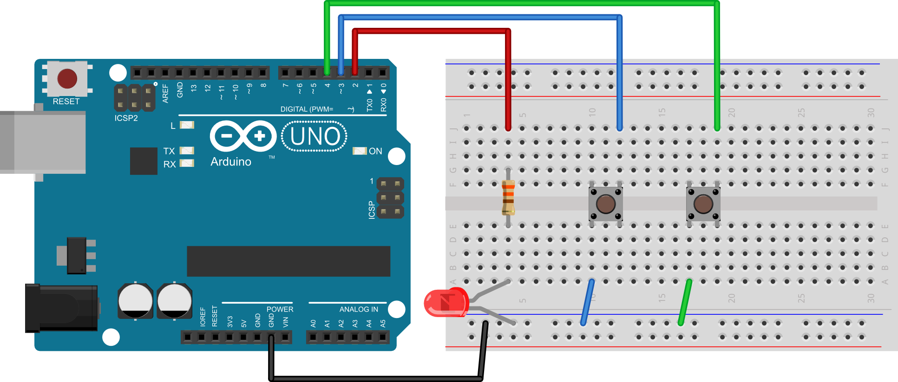

POGLAVLJE 7 - Zadatak 36:
Na mikrokontroler spojite dva tipkala i jednu svjetleću diodu. Zamislite da je prvo tipkalo senzor proizvoda na proizvodnoj traci prije pakiranja proizvoda u kutije, a da je svjetleća dioda pokazatelj da se proizvodna traka kreće. Proizvodi se pakiraju u kutije po 6 proizvoda. Pritiskom na tipkalo simulirajte prolazak proizvoda na traci. Napišite program koji upravlja radom proizvodne trake na sljedeći način: pokretna traka je uključena sve dok kroz senzor proizvoda (prvo tipkalo) ne prođe 6 proizvoda. Tada se proizvodna traka zaustavlja (isključuje se svjetleća dioda) do dolaska radnika. Kako se radnik nalazi na udaljenom mjestu potrebno je serijskom vezom radniku poslati na računalo obavijest "PROIZVODNA KUTIJA JE NAPUNJENA". Kada radnik dođe do proizvodne trake i ukloni kutiju proizvoda proizvodna linija se može ponovno pokrenuti. Ponovno pokretanje proizvodne linije izvršava radnik pritiskom na drugo tipkalo. U tom se slučaju na računalo serijskim putem šalje poruka "PROIZVODNA TRAKA JE U POGONU". Po uključivanju mikrokontrolera proizvodna se traka ne smije pokrenuti dok radnik ne pritisne tipkalo za pokretanje trake.
SHEMA:

EKSPERIMENTALNA PLOČICA:

RJEŠENJE:
int led = 2; //definiraj led = 2 int tipkalo1 = 3; //definiraj tipkalo1 = 3 int tipkalo2 = 4; //definiraj tipkalo2 = 4 int brojac = 0; //definiraj brojac = 0 void setup() { pinMode(led, OUTPUT); //postavi izvod led kao izlazni pinMode(tipkalo1, INPUT_PULLUP); //postavi izvod tipkalo1 kao ulazni pinMode(tipkalo2, INPUT_PULLUP); //postavi izvod tipkalo2 kao ulazni digitalWrite(led, LOW); //isključi led diodu - početno stanje Serial.begin(9600); //inicijalizacija serijske veze } void loop() { while(digitalRead(tipkalo2)==HIGH){ //dok tipkalo 2 nije pritisnutno delay(10); //čekaj 10 ms } Serial.println("PROIZVODNA TRAKA JE U POGONU"); //pošalji poruku serijskim putem digitalWrite(led, HIGH); //uključi LED diodu brojac=0; //postavi brojač na 0 while(brojac<6){ //dok je brojač manji od 6 if(digitalRead(tipkalo1)==LOW){ //ako je tipkalo 1 pritisnuto brojac=brojac+1; //dodaj jedan na brojač } } Serial.println("PROIZVODNA KUTIJA JE NAPUNJENA"); //pošalji poruku serijskim putem digitalWrite(led, LOW); //isključi LED diodu }